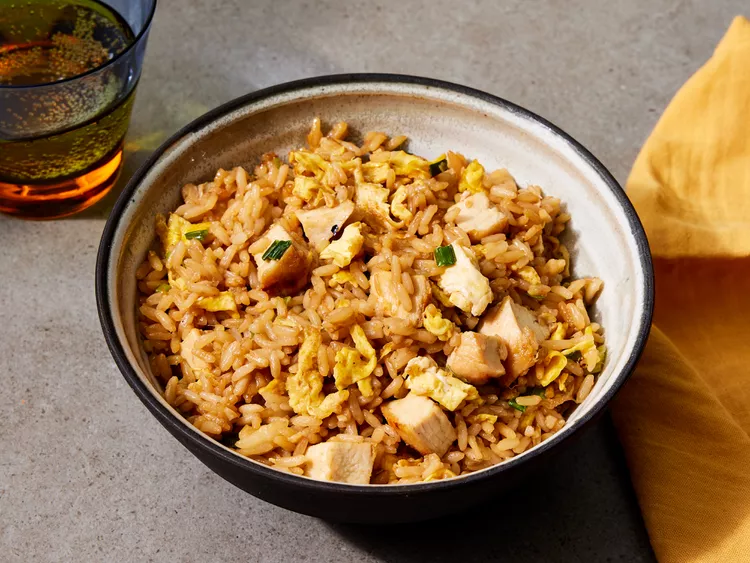

Hibachi-Style Fried Rice

Home
Description
This is a delicious fried rice. Cooked quickly served with packed with garlic, green onion, egg, and soy sauce flavor. Homecooked meal.
Ingredients
- 1/4 cup olive oil
- 2 large eggs, beaten
- 1 cup chopped grilled chicken (optionl)
- 1/2 cup chopped green onion
- 2 tablespoons chopped garlic
- 2 cups cooked white rice, chilled
- 3 tablespoons soy sauce
Steps
- Gather all ingredients
- Heat a wok or nonstick skillet over medium-high heat; add olive oil. Stir beaten eggs in the hot oil until cooked through, 2 to 3 minutes. Add chicken, green onion, and garlic to scarambled eggs; cook and stir until heated through, about 2 minutes.
- Mix rice into egg mixture; cook and stir until rice is warmed, about 2 minutes.
- Add soy sauce; cook and stir until rice mixture is evenly cooked, about 3 minutes.